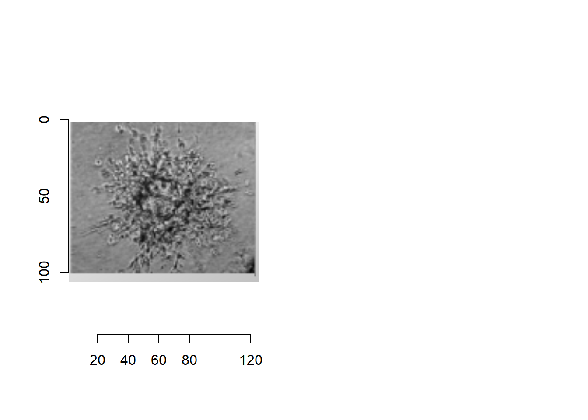
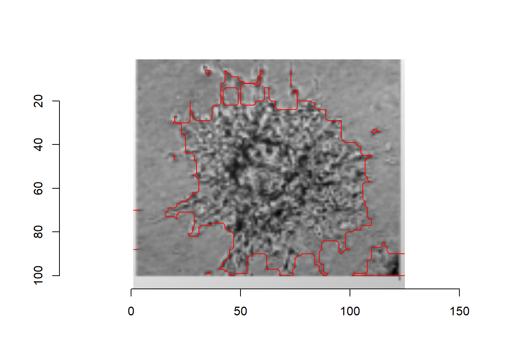

5 Looking ahead
for this chapter we will be looking two years into the future and where I expect to be at that time. In addition I will also make a plan and execute it for a skill I think is handy to have in these future job ideas
firstly I am not yet sure if I want to work or do a master after I graduate from the HU. On one side I have already have a lot of experience working because I did multiple internships. I enjoyed most of the work I did and with what I learned during my bachelor I feel like I could do some really good work out there.
On the other side I do enjoy studying a whole lot as long as I find the subject interesting. I also don’t want to regret later that if I could have studied more.
Overall I think I would be happy with both, I think the most important part about studying or working is to find satisfaction and meaning in what I do.
Still i want to show how I going about learning a new skill so I will look into what is happening in the upcoming year.
As of right now I’m in my third year and still need to do an one year internship in Norway. The lab I will be working at does research into matrix biology. Specifically looking at an intergrin called alpha11beta1. This intergrin is present on normal fibroblasts and carcinoma-associated fibroblasts. Because it is not completely know how this protein works and what effects of it are during cancer development we research it.
For this Internship I will be working with spheroid assays. This assay shows the growth of a small clump of tumor cells (the spheroid) over multiple hours and/or days. I want to familiarize myself with the technique and see if I can reproduce some samples with R studio. Right now, most spheroid assays are checked with image J or a non-opensorece company software.
I laid out a plan of steps and will go through the process step by step
step 1 is for R studio to be able to draw the outline of the cells in an image. I plan to use the imager package for this and if necessary the magick package. (I would also like to automate this but this can wait till after step 2. )
step 2 is for R studio to calculate the area of the of the cell (based on the given metadata aka: the zoom and starting size of the cells.)
step 3 and last step is to R to able to this over every frame of a video/ be given a time to take an image. (if I say every 10 seconds or hour take the images)
5.1 step 1 outlining data
first we load the images into our R environment
# we downloaded the pictures from the
#install.packages("imager")
#install.packages("sf")
library(sf)## Linking to GEOS 3.9.3, GDAL 3.5.2, PROJ 8.2.1; sf_use_s2() is TRUElibrary(imager)## Loading required package: magrittr##
## Attaching package: 'magrittr'## The following object is masked from 'package:purrr':
##
## set_names## The following object is masked from 'package:tidyr':
##
## extract##
## Attaching package: 'imager'## The following object is masked from 'package:magrittr':
##
## add## The following object is masked from 'package:stringr':
##
## boundary## The following object is masked from 'package:dplyr':
##
## where## The following object is masked from 'package:tidyr':
##
## fill## The following objects are masked from 'package:stats':
##
## convolve, spectrum## The following object is masked from 'package:graphics':
##
## frame## The following object is masked from 'package:base':
##
## save.imageBLM_Day_1 <- load.image('C:/Users/Dell/Documents/Rschool/dsfb2_workflows_portfolio/vrij_opdracht/data/BLM_Day_1.png')
BLM_Day_2 <- load.image('C:/Users/Dell/Documents/Rschool/dsfb2_workflows_portfolio/vrij_opdracht/data/BLM_Day_2.png')
BLM_Day_3 <- load.image('C:/Users/Dell/Documents/Rschool/dsfb2_workflows_portfolio/vrij_opdracht/data/BLM_Day_3.png')
BLM_Day_4 <- load.image('C:/Users/Dell/Documents/Rschool/dsfb2_workflows_portfolio/vrij_opdracht/data/BLM_Day_4.png')after loading the pictures we convert them into greyscale. Most of the used images should already be greyscale but just in case we can cover for it.
BLM_Day_1_gray <- grayscale(BLM_Day_1)
BLM_Day_2_gray <- grayscale(BLM_Day_2)
BLM_Day_3_gray <- grayscale(BLM_Day_3)
BLM_Day_4_gray <- grayscale(BLM_Day_4)Next we need to remove the background shading. In most pictures there will be lighter and darker areas in the background to remove these we use lm to find the linear trend.
df_1 <- as.data.frame(BLM_Day_1_gray)
m_1 <- lm(value ~ x + y,data=df_1) #linear trend
im_1.g <- BLM_Day_1_gray
df_2 <- as.data.frame(BLM_Day_2_gray)
m_2 <- lm(value ~ x + y,data=df_2) #linear trend
im_2.g <- BLM_Day_2_gray
df_3 <- as.data.frame(BLM_Day_3_gray)
m_3 <- lm(value ~ x + y,data=df_3) #linear trend
im_3.g <- BLM_Day_3_gray
df_4 <- as.data.frame(BLM_Day_4_gray)
m_4 <- lm(value ~ x + y,data=df_4) #linear trend
im_4.g <- BLM_Day_4_grayafter finding the linear trend we fit this over the original image. I used image 4 as an example with the before and after picture.
im_1.f <- im_1.g-fitted(m_1)
im_2.f <- im_2.g-fitted(m_2)
im_3.f <- im_3.g-fitted(m_3)
im_4.f <- im_4.g-fitted(m_4)
layout(t(1:2))
plot(BLM_Day_4_gray , main="Before")
plot(im_4.f , main="After trend removal")
so now that we have a nice even picture we are going to determine the threshold. the threshol shows us what part of the picture stands out the most hard lines and blotches of darker colour stand out. how much much the threshold will depend on how high or low you set it. in the example we have set the threshold to 25 , 15 and 5 % and we can examine it with the original picture.
layout(t(1:2))
plot(im_4.f)
paste0(c(25,15,5),"%") %>% map_il(~ threshold(im_4.f,.)) %>% plot(layout="row")
 5% is very low and you almost see noting of the lines, 25% gives a bit more detail than there is truly in the picture. 15% seems to be on the right track we are going to continue with that one and see if we can get a more detaild picture
5% is very low and you almost see noting of the lines, 25% gives a bit more detail than there is truly in the picture. 15% seems to be on the right track we are going to continue with that one and see if we can get a more detaild picture
layout(t(1:2))
plot(im_4.f)
paste0(c(17,15,13),"%") %>% map_il(~ threshold(im_4.f,.)) %>% plot(layout="row") there are small differences in these pictures which concerns the small spots around the cell the closest we are going to get is probably the 17% one so we continue our analysis with that. We are going to save the 17% threshold into an new vector. Next we will convert this to a pixel set. we repeat the process of checking the threshold for every cell. it does not have to be perfect yet we can clean up in the next step
im_1.t <- threshold(im_1.f,"3%")
px_1 <- as.pixset(1-im_1.t) #Convert to pixset
im_2.t <- threshold(im_3.f,"4%")
px_2 <- as.pixset(1-im_2.t) #Convert to pixset
im_3.t <- threshold(im_3.f,"7%")
px_3 <- as.pixset(1-im_3.t) #Convert to pixset
im_4.t <- threshold(im_4.f,"18%")
px_4 <- as.pixset(1-im_4.t) #Convert to pixset
plot(px_4)this is the result of the pixelset, the pixel set ecentially marks every pixel that was black in the threshold. now we can use the fill and clean command on this to clear of some of the pixels we don’t want and highlight the left over pixels.
# png(file='C:/Users/Dell/Documents/Rschool/dsfb2_workflows_portfolio/vrij_opdracht/data/BLM_Day_1_circle.png')
# plot(BLM_Day_1)
# fill(px_1,6) %>% clean(3)
#
# png(file='C:/Users/Dell/Documents/Rschool/dsfb2_workflows_portfolio/vrij_opdracht/data/BLM_Day_2_circle.png')
# plot(BLM_Day_2)
# fill(px_2,6) %>% clean(2)
#
# png(file='C:/Users/Dell/Documents/Rschool/dsfb2_workflows_portfolio/vrij_opdracht/data/BLM_Day_3_circle.png')
# plot(BLM_Day_3)
# fill(px_3,5) %>% clean(0.5)
#
# png(file='C:/Users/Dell/Documents/Rschool/dsfb2_workflows_portfolio/vrij_opdracht/data/BLM_Day_4_circle.png')
# plot(BLM_Day_4)
# fill(px_4,6) %>% clean(1.5)
plot(im_4.f)
fill(px_4,6) %>% clean(1.5) %>% highlight here we can see the result of our plotting. its important that the complete cell is seround by the red border and that as many of the left over cells are included in that border. it is also important that it is disconnected from the discoloration in the bottom right. next we want to select the main body of our analysis we do this locating the middle of our image with the summarise function next we will put the outcome of this into the px.flood command this will select the whole white body that is part of the middle
px_1 <- fill(px_1,6) %>% clean(3)
px_2 <- fill(px_2,6) %>% clean(2)
px_3 <- fill(px_3,5) %>% clean(0.5)
px_4 <- fill(px_4,6) %>% clean(1.5)
px_1_middle <- imager::where(px_1) %>% dplyr::summarise(mx=mean(x),my=mean(y))
px_2_middle <- imager::where(px_2) %>% dplyr::summarise(mx=mean(x),my=mean(y))
px_3_middle <- imager::where(px_3) %>% dplyr::summarise(mx=mean(x),my=mean(y))
px_4_middle <- imager::where(px_4) %>% dplyr::summarise(mx=mean(x),my=mean(y))
px_1 <- px.flood(px_1, round(px_1_middle$mx),round(px_4_middle$my),sigma=.0001)
px_2 <- px.flood(px_2, round(px_2_middle$mx),round(px_4_middle$my),sigma=.0001)
px_3 <- px.flood(px_3, round(px_3_middle$mx),round(px_4_middle$my),sigma=.0001)
px_4 <- px.flood(px_4, round(px_4_middle$mx),round(px_4_middle$my),sigma=.0001)
array(t(1:4))## [1] 1 2 3 4plot(px_1)plot(px_2)plot(px_3)plot(px_4)now we have a pixel set with the outline of our cells.
5.2 Step 2 getting the pixel area
with this pixelset we can calculate the pixels of the cells in this image
px_1## Pixel set of size 703. Width: 125 pix Height: 106 pix Depth: 1 Colour channels: 1px_2## Pixel set of size 1175. Width: 125 pix Height: 106 pix Depth: 1 Colour channels: 1px_3## Pixel set of size 1634. Width: 125 pix Height: 106 pix Depth: 1 Colour channels: 1px_4## Pixel set of size 5373. Width: 125 pix Height: 106 pix Depth: 1 Colour channels: 1# percentage pixels of the total picture
paste(round(sum(px_1) / (height(px_1) * width(px_1)) *100, digits = 2) , "%" )## [1] "5.31 %"paste(round(sum(px_2) / (height(px_2) * width(px_2)) *100, digits = 2) , "%" )## [1] "8.87 %"paste(round(sum(px_3) / (height(px_3) * width(px_3)) *100, digits = 2) , "%" )## [1] "12.33 %"paste(round(sum(px_4) / (height(px_4) * width(px_4)) *100, digits = 2) , "%" )## [1] "40.55 %"#percentage growth after day 1
paste(round((sum(px_1)-sum(px_1)) / (height(px_1) * width(px_1)) *100, digits = 2) , "%" )## [1] "0 %"paste(round((sum(px_2)-sum(px_1)) / (height(px_2) * width(px_2)) *100, digits = 2) , "%" )## [1] "3.56 %"paste(round((sum(px_3)-sum(px_1)) / (height(px_3) * width(px_3)) *100, digits = 2) , "%" )## [1] "7.03 %"paste(round((sum(px_4)-sum(px_1)) / (height(px_4) * width(px_4)) *100, digits = 2) , "%" )## [1] "35.25 %"png(file='C:/Users/Dell/Documents/Rschool/dsfb2_workflows_portfolio/vrij_opdracht/data/BLM_Day_1_circle.png')
plot(BLM_Day_1)
fill(px_1,6) %>% clean(3) %>% highlight
png(file='C:/Users/Dell/Documents/Rschool/dsfb2_workflows_portfolio/vrij_opdracht/data/BLM_Day_2_circle.png')
plot(BLM_Day_2)
fill(px_2,6) %>% clean(2) %>% highlight
png(file='C:/Users/Dell/Documents/Rschool/dsfb2_workflows_portfolio/vrij_opdracht/data/BLM_Day_3_circle.png')
plot(BLM_Day_3)
fill(px_3,5) %>% clean(0.5) %>% highlight
png(file='C:/Users/Dell/Documents/Rschool/dsfb2_workflows_portfolio/vrij_opdracht/data/BLM_Day_4_circle.png')
plot(BLM_Day_4)
fill(px_4,6) %>% clean(1.5) %>% highlight# colorise(BLM_Day_1,px,"red",alpha=.5) %>% plot
# plot(px)
# view(px)
# imager::where(px) %>% dplyr::summarise(mx=mean(x),my=mean(y))
# #BLM_Day_1_circle <- load.image('C:/Users/Dell/Documents/Rschool/dsfb2_workflows_portfolio/vrij_opdracht/data/BLM_Day_1_circle.png')
# #unique()
# sum(px)
# px
# BLM_Day_1